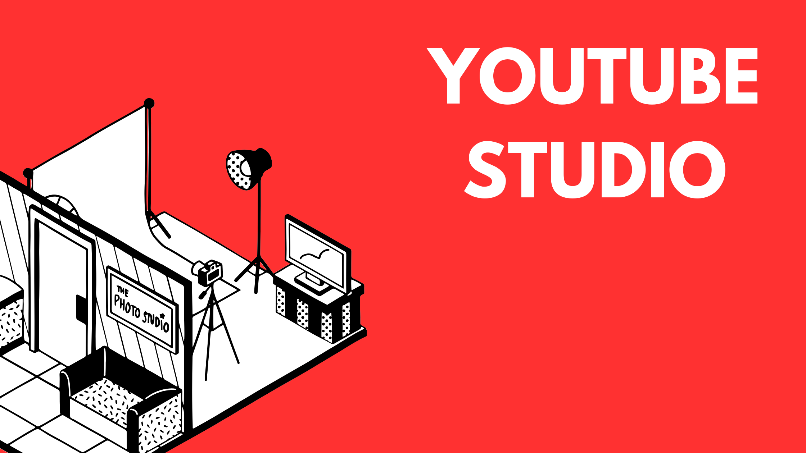

YouTube Studio
YouTube Studio is a platform designed for creators to manage their content and challenges effectively. It provides features that all creators can use to better present their videos to the public, ensuring that they can showcase their work as quality content to the world.
Features of YouTube Studio
- Dashboard: YouTube Studio includes a dashboard that offers an overview of your channel's performance, displaying important statistics from recent videos, such as views and engagement metrics.
- Analytics: By analyzing your audience and the time spent watching your videos, you gain detailed insights into traffic sources and channel revenue.
- Video Management: The platform provides tools to schedule and manage your videos effectively, offering clarity and organization.
- Copyright Management: YouTube Studio allows creators to use tools that help avoid copyright issues, enabling them to establish themselves as reputable YouTubers.
- Mobile Access: Accessible through both desktop and mobile apps, YouTube Studio streamlines channel management and offers creators new challenges to enhance their videos.
- Content Creation Tools: The platform provides various tools to help creators edit and enhance their videos, ensuring they meet YouTube’s guidelines.
Release Date
February 17, 2015
Update & Version
Latest Version: October 21, 2024 / Version 24.43.100
Download Link
Download YouTube Studio